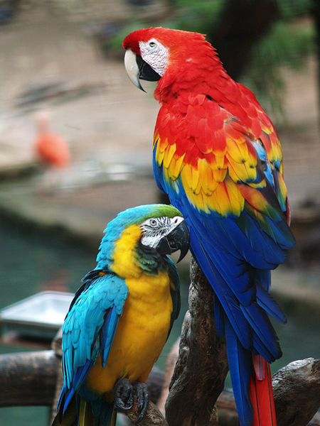
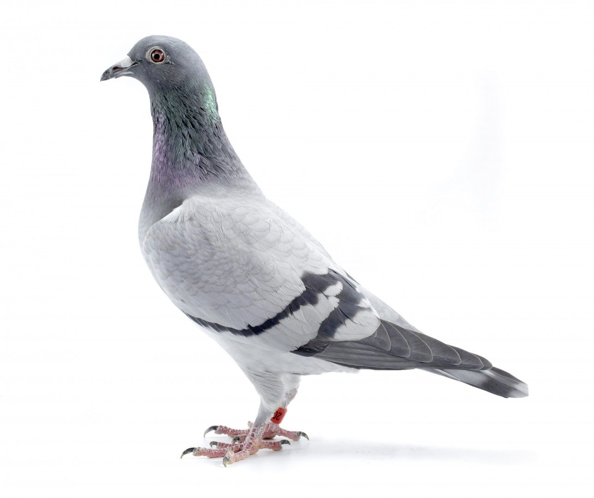
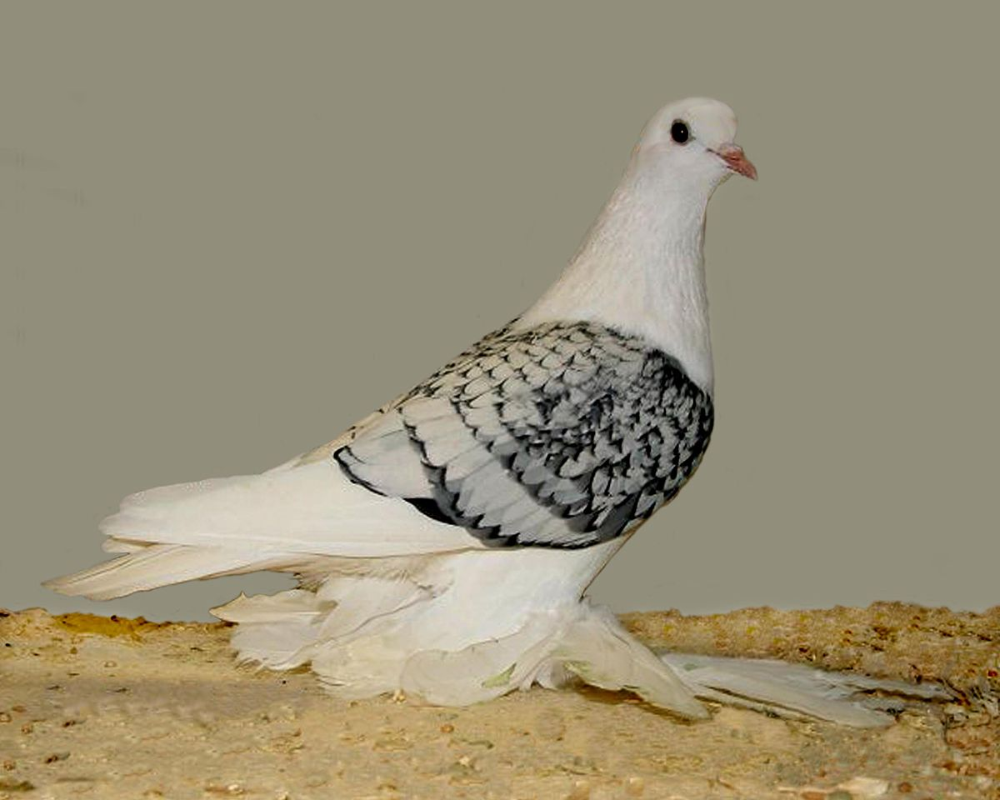
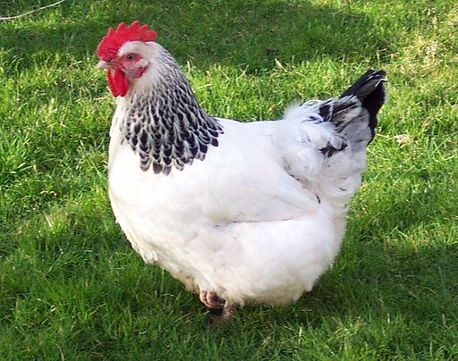

Grey parrot

ABOUT
The grey parrot, also known as the Congo grey parrot, Congo African grey parrot or African grey parrot, is an Old World parrot in the family Psittacidae. The Timneh parrot once was identified as a subspecies of the grey parrot, but has since been elevated to a full species. Wikipedia Lifespan: 23 years (In the wild, Estimated) Length: 33 cm (Adult) Mass: 400 g Scientific name: Psittacus erithacus Family: Psittacidae Kingdom: Animalia Order: Psittaciformes
Blue-and-yellow macaw
ABOUT
The blue-and-yellow macaw, also known as the blue-and-gold macaw, is a large South American parrot with mostly blue top parts and light orange underparts, with gradient hues of green on top of its head. It is a member of the large group of neotropical parrots known as macaws. Wikipedia Conservation status: Least Concern (Population decreasing) Encyclopedia of Life Mass: 0.09 – 1.5 kg Scientific name: Ara ararauna Length: 81 – 91 cm Encyclopedia of Life Family: Psittacidae Kingdom: Animalia Order: Psittaciformes
Budgerigar

ABOUT
The budgerigar, also known as the common parakeet or shell parakeet, is a small, long-tailed, seed-eating parrot usually nicknamed the budgie, or in American English, the parakeet. Budgies are the only species in the genus Melopsittacus. Wikipedia Lifespan: 5 – 8 years (In captivity) Mass: 30 – 40 g (Adult, In the wild) Clutch size: 4 – 6 Length: 18 cm (Adult, In the wild) Scientific name: Melopsittacus undulatus Higher classification: Melopsittacus Conservation status: Least Concern (Population increasing) Encyclopedia of Life
Lovebirds

ABOUT
Lovebird is the common name for the genus Agapornis, a small group of parrots in the Old World parrot family Psittaculidae. Of the nine species in the genus, all are native to the African continent, with the grey-headed lovebird being native to the African island of Madagascar. Wikipedia Lifespan: Rosy-faced lovebird: 15 – 25 years Clutch size: 4 – 6 Scientific name: Agapornis Family: Psittaculidae Kingdom: Animalia Order: Psittaciformes
Cockatoos

ABOUT
A cockatoo is any of the 21 parrot species belonging to the family Cacatuidae, the only family in the superfamily Cacatuoidea. Along with the Psittacoidea and the Strigopoidea, they make up the order Psittaciformes. Wikipedia Lifespan: Cockatiel: 10 – 15 years, White cockatoo: 40 – 60 years, MORE Scientific name: Cacatuidae Family: Cacatuidae; G. R. Gray 1840 Kingdom: Animalia Order: Psittaciformes Phylum: Chordata
Canary

ABOUT
The domestic canary, often simply known as the canary, is a domesticated form of the wild canary, a small songbird in the finch family originating from the Macaronesian Islands. Canaries were first bred in captivity in the 17th century, having been brought to Europe by Spanish sailors. Wikipedia Lifespan: Red factor canary: 10 – 12 years Scientific name: Serinus canaria domestica Length: 12 – 20 cm Family: Fringillidae Kingdom: Animalia Order: Passeriformes
Finches

ABOUT
The true finches are small to medium-sized birds in the family Fringillidae. Finches have stout conical bills adapted for eating seeds and nuts and often have colourful plumage. They occupy a great range of habitats where they are usually resident and do not migrate. Wikipedia Clutch size: Lesser goldfinch: 3 – 4 Scientific name: Fringillidae Higher classification: Passerine Rank: Family Family: Fringillidae; Leach, 1820 Kingdom: Animalia
Indian Ring-Necked Parakeet

ABOUT
The rose-ringed parakeet, also known as the ring-necked parakeet, is a medium-sized parrot in the genus Psittacula, of the family Psittacidae. Wikipedia Mass: 130 g (Adult) Encyclopedia of Life Scientific name: Psittacula krameri Conservation status: Least Concern (Population increasing) Encyclopedia of Life Family: Psittaculidae Kingdom: Animalia Order: Psittaciformes Phylum: Chordata
Hyacinth Macaw

ABOUT
The hyacinth macaw, or hyacinthine macaw, is a parrot native to central and eastern South America. With a length of about one meter it is longer than any other species of parrot. It is the largest macaw and the largest flying parrot species; the flightless kākāpō of New Zealand outweighs it at up to 3.5 kg. Wikipedia Conservation status: Vulnerable (Population decreasing) Encyclopedia of Life Lifespan: 50 years (In the wild) Scientific name: Anodorhynchus hyacinthinus Clutch size: 1 – 4 Length: 100 cm (Adult) Mass: 1.2 – 1.7 kg (Adult) Family: Psittacidae
pigeon Columbidae
ABOUT
Columbidae is a bird family consisting of doves and pigeons. It is the only family in the order Columbiformes. These are stout-bodied birds with short necks and short slender bills that in some species feature fleshy ceres. They primarily feed on seeds, fruits, and plants. Wikipedia Clutch size: Marquesan imperial pigeon: 1 Scientific name: Columbidae Higher classification: Columbiformes Clade: Columbimorphae Family: Columbidae; Leach, 1820 Kingdom: Animalia
Ice pigeon
ABOUT
The Ice pigeon is a breed of fancy pigeon developed over many years of selective breeding. Ice pigeons, along with other varieties of domesticated pigeons, are all descendants from the rock pigeon. In 1846, Charles Darwin is known to have crossbred the Ice pigeon in order to ascertain colour patterns. Wikipedia Scientific name: Columba livia domestica Rank: Animal breed Breed of: Domestic pigeon
Oriental Roller

ABOUT
The Oriental Roller is a breed of fancy pigeon developed over many years of selective breeding. Oriental Rollers, along with other varieties of domesticated pigeons are all descendants from the rock pigeon. Wikipedia Scientific name: Columba livia Higher classification: Domestic pigeon Rank: Animal breed
Egyptian Swift pigeon

ABOUT
The Egyptian Swift is a breed of fancy pigeon developed over many years of selective breeding. The name swift was given by reason of a resemblance to the bird of that name. Egyptian Swifts, along with other varieties of domesticated pigeons, are all descendants from the rock pigeon. Wikipedia Origin: Egypt
Antwerp Smerle

ABOUT
The Antwerp Smerle is a breed of fancy pigeon developed over many years of selective breeding. Antwerp Smerles, along with other varieties of domesticated pigeons, are all descendants from the rock pigeon. The Smerle was one of the breeds used in the development of the Racing Homer. Wikipedia Origin: Belgium Rank: Variety
Silkie

ABOUT
The Silkie is a breed of chicken named for its atypically fluffy plumage, which is said to feel like silk and satin. The breed has several other unusual qualities, such as black skin and bones, blue earlobes, and five toes on each foot, whereas most chickens only have four. Wikipedia Primary use: Exhibition Egg production (annual): 160 Egg size: Tiny Temperament: Calm, friendly Recognized variety: Bearded Black, Bearded Blue, Bearded Buff, MORE Egg color: Cream Adult male weight (lbs.): ≥ 4
Plymouth Rock chicken

ABOUT
The Plymouth Rock is an American breed of domestic chicken. It was first seen in Massachusetts in the nineteenth century, and for much of the early twentieth century was the most widely kept chicken breed in the United States. It is a dual-purpose chicken, raised both for its meat and for its brown eggs. Wikipedia Primary use: Egg, Meat Egg production (annual): 210 Egg size: Large Temperament: Calm Recognized variety: Blue, Black, White Egg color: Brown Adult male weight (lbs.): ≥ 8
Sussex chicken
ABOUT
The Sussex is a British breed of dual-purpose chicken, reared both for its meat and for its eggs. Eight colours are recognised for both standard-sized and bantam fowl. A breed association, the Sussex Breed Club, was organised in 1903. Wikipedia Primary use: Egg, Meat Egg production (annual): 250 Egg size: Large Temperament: docile, Alert Recognized variety: Red, White, Silver Egg color: Cream, Tan, Brown Adult male weight (lbs.): ≥ 9
Polish chicken

ABOUT
The Polish or Poland is a European breed of crested chickens known for its remarkable crest of feathers. The oldest accounts of these birds come from The Netherlands; their exact origins are unknown, however. In addition to combs, they are adorned with large crests that nearly cover the entirety of the head. Wikipedia Primary use: Exhibition Egg production (annual): 100 Egg size: Tiny Recognized variety: Bearded Buff Laced, Bearded Golden, MORE Egg color: White Adult male weight (lbs.): ≥ 6 Adult female weight (lbs.): ≥ 4.5
Araucana

ABOUT
The Araucana is a breed of domestic chicken from Chile. Its name derives from the Araucanía region of Chile where it is believed to have originated. It lays blue-shelled eggs, one of very few breeds that do so. Breed standards for the Araucana vary from country to country. Wikipedia Primary use: Egg Recognized variety: Black, White Egg color: Blue Adult male weight (lbs.): ≥ 5 Adult female weight (lbs.): ≥ 4 Origin: Chile APS: light breed softfeather
Shamo chickens

ABOUT
Shamo is an overall designation for gamefowl in Japan. There are seven recognised breeds of Shamo chicken in Japan, all of which are designated Natural Monuments of Japan. The Shamo breeds are thought to derive from fighting chickens of Malay type brought from Thailand in the early part of the 17th century. Wikipedia Primary use: Exhibition Egg size: Medium Temperament: docile Recognized variety: Black, Wheaten Egg color: Brown Adult male weight (lbs.): ≥ 11 Adult female weight (lbs.): ≥ 7
Kadaknath

ABOUT
Kadaknath, also called Kali Masi, is an Indian breed of chicken. They originated from Dhar and Jhabua, Madhya Pradesh. These birds are mostly bred by the rural and tribals. There are three varieties: jet black, golden and pencilled. Wikipedia Origin: Madhya Pradesh Scientific name: Gallus gallus domesticus Egg color: Cream Weight: Male: 1.8kg - 2kg; Female: 1.2kg - 1.4kg Higher classification: Chicken Rank: Animal breed Other names: Black chicken/black hen
Indian Runner duck

ABOUT
Indian Runners are a breed of Anas platyrhynchos domesticus, the domestic duck. They stand erect like penguins and, rather than waddling, they run. The females usually lay about 300 to 350 eggs a year or more, depending whether they are from exhibition or utility strains. Wikipedia Height: 50 – 76 cm (Adult, From crown to tail tip) Scientific name: Anas platyrhynchos domesticus Mass: 1.6 – 2.3 kg (Male, Adult), 1.4 – 2 kg (Female, Adult) Egg color: Greenish blue Skin color: Pink
Rouen duck

ABOUT
The Rouen is a heavyweight breed of domesticated duck raised primarily for decoration, exhibition or as general purpose ducks. Since they are not prolific egg layers, Rouen ducks are most commonly bred for their meat. The breed originated in France sometime before the 19th century. Wikipedia Mass: 2.7 – 3.6 kg (Adult, Production-bred variety) Scientific name: Anas platyrhynchos domesticus Rank: Animal breed Higher classification: Domestic duck
Crested

ABOUT
The Crested is a breed of domestic duck. It was probably brought to Europe from the East Indies by Dutch ships. It has its appearance because it is heterozygous for a genetic mutation causing a deformity of the skull. Wikipedia Scientific name: Anas platyrhynchos domesticus Higher classification: Domestic duck Rank: Animal breed APA: medium Egg colour: blue, green, tinted or white Standard: Poultry Club of Great Britain Weight: Male:: Standard: 3.2 kg; Bantam: 1.125 kg: 415 ;
Vit bau

ABOUT
Vit Bau - Engineer at PayPal - Vietnam | LinkedIn. Skip to main content Skip to main content LinkedIn. Join now Sign in. Vit Bau.
Shetland duck

ABOUT
The Shetland duck is a breed of domestic duck originating in the Shetland Islands of Scotland. It is critically endangered. Wikipedia Origin: Scotland Higher classification: Domestic duck Weight: Male: 2 kg; Female: 1.8 kg
ONLINE_SHOPPING
1.PETS
2.PLANTS
3.PETS-ACCESSORIES
4.PLANTS-ACCESSORIES
5.PETS-SPA & PETS-CARE
6.PLANTS-CARE
7.ADD-YOUR PRODUCTS
COSTOMER POLICIES
CONTACT US
TERMS OF USE
TRACK ORDERS
SHIPPING
RETURNS
PRIVACY POLICY